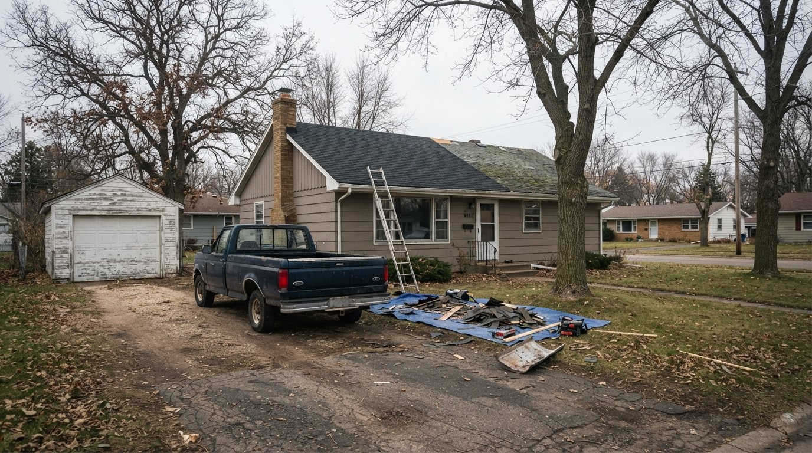

01
Roof Replacement
Full tear-off and replacement when repair no longer makes sense, with a clean job site when we're done.

Crawford Roofing Solutions serves Bloomington, MN and the surrounding area — straightforward pricing, careful work.
Every job gets the same attention, start to finish — no shortcuts, no surprises on the invoice.
Full tear-off and replacement when repair no longer makes sense, with a clean job site when we're done.
Targeted fixes for leaks, damaged flashing, or missing shingles -- no need to replace the whole roof.
Wind and hail damage assessed and repaired, with documentation for your insurance claim.
A thorough look at your roof's condition, with straightforward findings and photos.
Call anytime, or send a note and we’ll get back to you.
Fastest way to reach us
(952) 373-5348